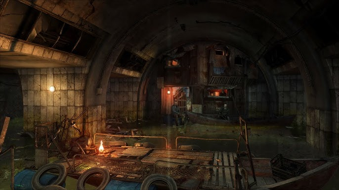

Aleksei decide que debería ir a la estación de venecia para buscar a sus amigos desaparecidos, pero al comprar los suministros se da cuenta que el equipo perfecto para ese lugar lo vende un hombre llamado Yuri este le vende equipo especial para sobrevivir a las aguas radiactivas de la estación de venecia, pero lo que no sabe Aleksei es que el equipo que le vendió Yuri es completamente falso. Aleksei se da cuenta de esto cuando llega a la estación de venecia, pues el equipo no le brinda ninguna protección contra las aguas. Por lo que su aventura termina aqui. Luego de un par de meses Aleksei muere por la exposición a las aguas radiactivas, sin haber encontrado a sus amigos desaparecidos ni haber llegado a Polis. Yuri se queda con el dinero que le dio Aleksei por el equipo falso, y sigue estafando a otras personas que buscan sobrevivir en la estación de venecia.
